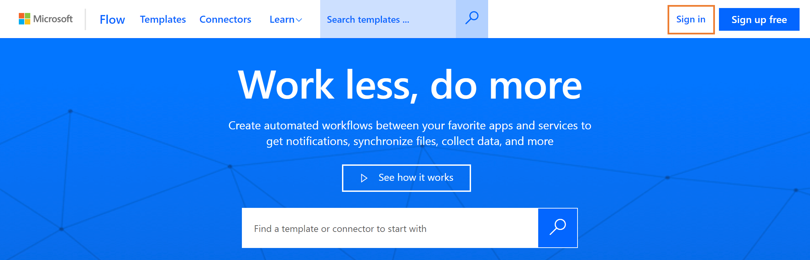
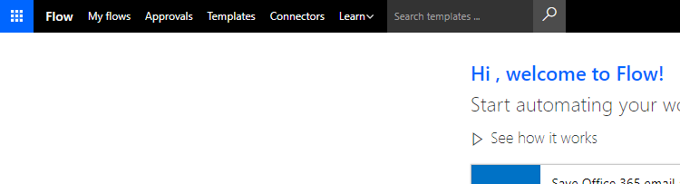
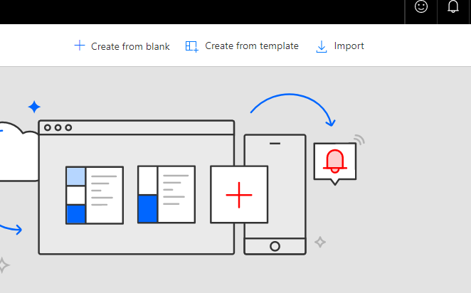
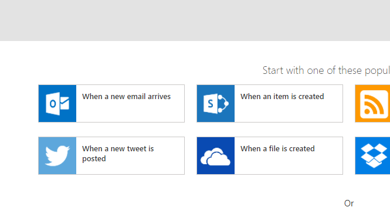
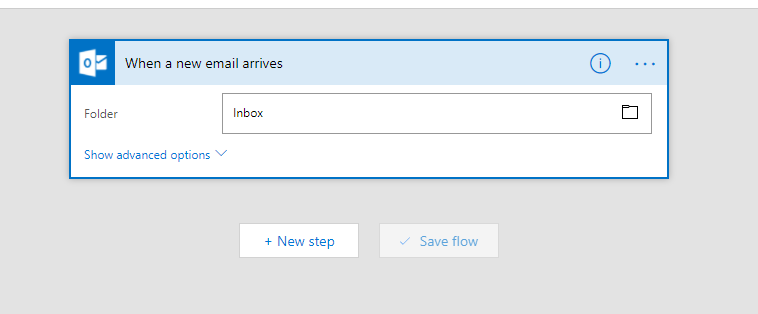
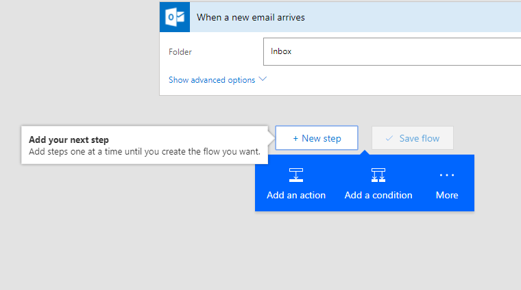
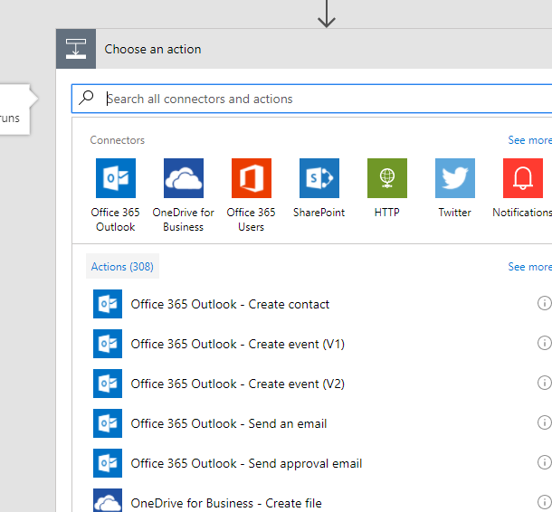
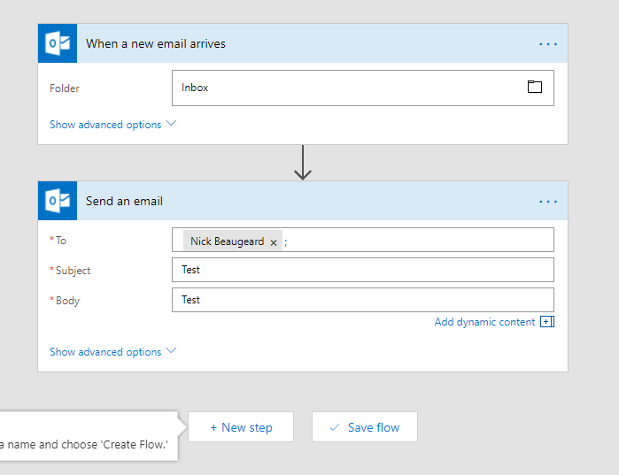
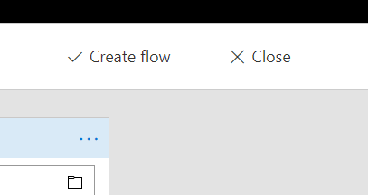
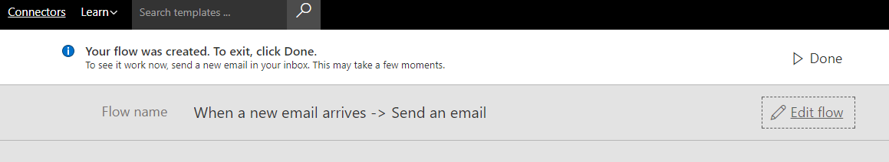

|
<< Click to Display Table of Contents >> Navigation: CCH iFirm Integration Guide > Installation and Configuration of the Flows > Part 1. Login and Initialise Microsoft Flow |
The integration uses Microsoft Flow to connect CCH iFirm Practice Management data with the OnePractice apps. In order to make this work effectively, Flow needs to be initialised for first use. The following procedure performs this.
Step |
Instructions |
Screenshot |
|---|---|---|
1 |
Navigate to Flow.
Log in using your global administrator credentials. |
 |
2 |
If you have not used flow before, choose your country and click Get Started.
If you've previously created a Flow with this user account, you can skip to Part 2. Implement Flow #3. |
|
3 |
Click My Flows. |
 |
4 |
Click Create from Blank. |
 |
5 |
Choose When a New Email Arrives. |
 |
6 |
Wait for the system to connect to Office 365 and Click + New Step. |
 |
7 |
Click Add an Action. |
 |
8 |
Select Office 365 Outlook - Send an Email. |
 |
9 |
Enter the following details:
To: your name (admin@...)
Subject: Test
Body: Test
|
 |
10 |
Click Create Flow.
Wait for a moment while the flow saves. |
 |
11 |
Click Done. |
 |
*** PROCEDURE COMPLETE *** |
||